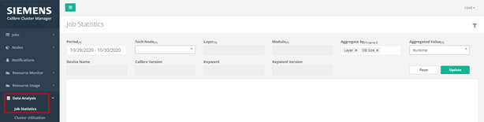
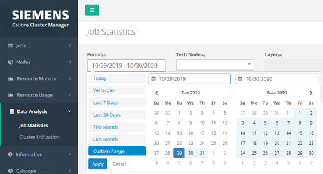
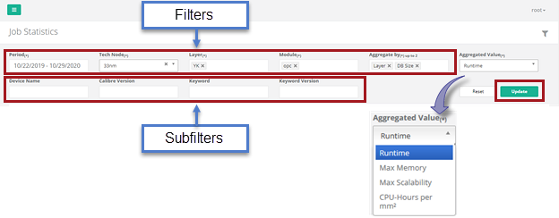
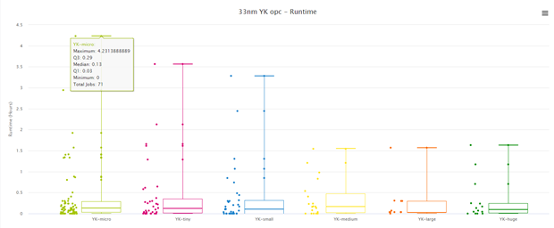
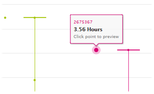
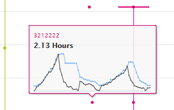
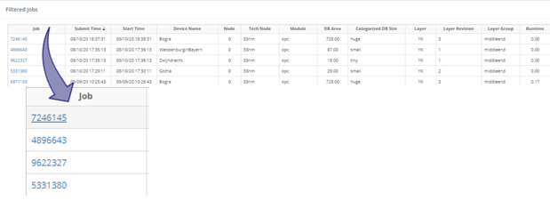
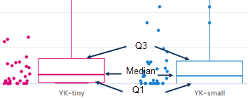
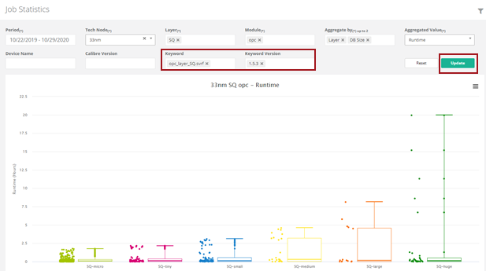
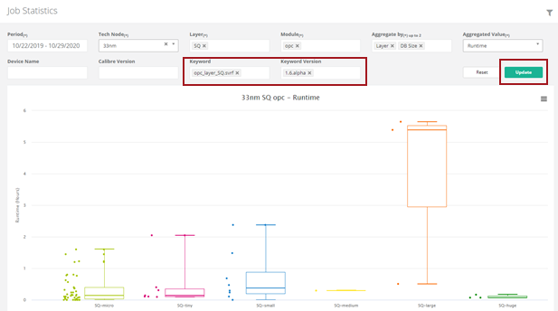

As part of the Calibre Cluster Manager
Plus (CalCM+) advanced features, you can perform data analysis on
your jobs by displaying the statistical data in an aggregated plot
and tabular format for a specified period.
Restrictions and Limitations
Prerequisites
The CalCM
daemon (calcmd) and CalCM dashboard web application must be running as
described in “Starting the CalCM Daemon”.
Jobs should
be configured as described in “Configuring Calibre Jobs to Run Under CalCM”.
Jobs must be
running under CalCM as described in “Executing Calibre Jobs to Run Under CalCM with the Dashboard”.
The following
CalCM applications must be enabled in the calcmd.conf configuration file:
calcm_jobanalysis_app.tcl
calcm_notification_app.tcl (This
Notification application is responsible for the remote parsing of
the Calibre log file from the Calibre execution host. This distributed
architecture avoids any bottleneck on the CalCM server.)
calcm_jobqueue_app.tcl
In the calcm_jobqueue_app.tcl application,
the parameter SCANJOBINFO must be set to 1. This enables CalCM to
scan the Calibre output transcripts to gather detailed job information
and record it to the CalCM database.
Procedure
- Open a
browser and enter the server name on which the CalCM daemon is running
and the dashboard server port specified in the CalCM configuration
file (calcmd.conf). For example,
DASHBOARDPORT = 9902
enter in the browser,
http://server_name:9902
- Log into
the CalCM dashboard web application with your authentication information and
verify that you have access to the Data Analysis pages
in the Groups settings. See “Accessing and Updating Settings in the CalCM Dashboard”.
- In the
left‑side menu of the CalCM dashboard, click the Data
Analysis menu item.
- Select
Job Statistics to open the page in the CalCM dashboard.
Figure 1. Job
Statistics Page
- In the
Job Statistics page, click inside the Period field
to select the date range for your job data for your analysis and
click Apply.
Choose the time period that is specific to your job
data. A message appears warning that the data may take longer to
load if the period is over one month.
Figure 2. Job
Statistics Period
Note: Fields with an asterisk ( * ) denote required fields.
- Filter
the data for your job analysis at the top of the Job Statistics
page by selecting field entries for the Tech Node, Layer, Module,
and Aggregate by up to 2. You can optionally select subfilter fields
for Device Name, Calibre Version, Keyword, and Keyword Version for
additional refinement.
Analyze the job data for different scenarios by choosing
from Runtime, Max Memory, and Max Scalability in the Aggregated
Value field. For example, a tapeout engineer with a long‑running
job may filter and aggregate the data by layer and database size
and then analyze the resulting runtime value. Another scenario may
require the analysis of maximum memory, maximum scalability, or
an aggregate of these values.
Figure 3. Job Statistics
Filters
- Click Update to
display a box and whiskers plot of the filtered job data.
In this style of plot, you can see the spread of the
data set by easily identifying cluster centers (boxes) and outliers
(whiskers). Hovering your cursor over a particular box and whisker
set in the plot displays the Minimum, Maximum, and Mean values along
with the Total Jobs for that data set.
Figure 4. Job
Statistics Plot
- Hover your
cursor over an outlier data point to see the job ID and value (for
example, the runtime) for that point.
Figure 5. Job
Statistics Data Point Value
- Click a
data point to preview a time‑series plot for the job ID. You can
view the associated job detail page by clicking a plot line.
Figure 6. Job
Statistics Data Point Plot
The information for each job ID also displays in a
tabular format in the Filtered Jobs table located below the main
plot window. You can click a job ID in the table to open the associated
job detail page.
Figure 7. Job Statistics
Filtered Jobs Table
- Similarly,
examine the data clusters defining the box portion of the job statistics
plot.
The cluster centers are represented by the box. The
median of the cluster shows as the center‑line between the lower
(Q1) and upper (Q3) quartiles that divide the data into the 25th
and 75th percentiles, respectively.
Figure 8. Job Statistics
Cluster Centers
- Use the
subfilter fields to perform further analysis of your data. For example,
a rule developer may filter by SVRF rule keyword version aggregated
by layer and database size and then compare the runtime values for
analysis.
Figure 9. Job
Statistics Filter by Keyword Version (1)
Figure 10. Job Statistics
Filter By Keyword Version (2)
Results
You have performed statistical data analysis on your job by filtering
and plotting aggregate values of the job data using CalCM+ advanced
features in the CalCM dashboard.